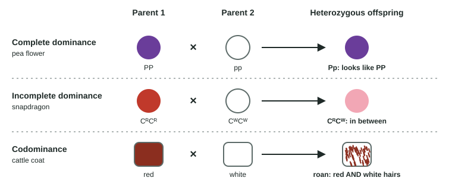

Mendel's ratios rest on four quiet assumptions: each gene is on its own chromosome pair, each has one dominant and one recessive allele, each trait is set by one gene, and every gene is in the nucleus. Real inheritance breaks each assumption somewhere. This page goes through the main cases: linked genes, incomplete dominance and codominance, many genes per trait and many traits per gene, and genes outside the nucleus. It ends with how to tell, using a chi-square test, whether a cross fits a predicted ratio at all.
Linked genes
A chromosome carries hundreds or thousands of genes. Genes close together on the same chromosome are linked genes: they go into gametes together, on the same chromosome, so they do not assort independently. A cross of double heterozygotes then gives too many offspring with the parents' combinations of traits and too few with new combinations.
![Left: an F1 female fruit fly's homologous pair; one homolog carries B (gray body) and P (red eyes) close together, the other b (black body) and p (purple eyes). Middle: most of her eggs carry B P or b p (parental), a few carry B p or b P (recombinant), made by crossing over between the two genes. Right: crossed with a black, purple-eyed male (b p / b p), the offspring are 470 gray red and 466 black purple (parental), 31 gray purple and 33 black red (recombinant), 1,000 in total. Bottom: recombination frequency = recombinant offspring ÷ total × 100 = 64 ÷ 1,000 × 100 = 6.4%; 1% recombination is 1 map unit, so the genes are about 6.4 map units apart. A scale runs from 0% (always inherited together) to 50% (behaving like unlinked genes).](../figures/linked-genes-testcross.svg)
Linkage is not total. In some meioses, crossing over (topic 5.2) happens in the stretch between the two genes, and the gamete gets a recombinant chromosome (Figure 1). The recombination frequency is the percentage of offspring with recombinant combinations:
recombination frequency = recombinant offspring ÷ total offspring × 100
The farther apart two genes are, the more likely a crossover falls between them, so the recombination frequency rises with distance. Geneticists define 1% recombination as 1 map unit (1 centimorgan) and use the values to build a linkage map, a map of gene order along a chromosome.
Worked example: recombination frequency and gene order.
A testcross of an F1 female fly (B P on one homolog, b p on the other) gives 470 gray red, 466 black purple, 31 gray purple and 33 black red flies.
Step 1, find the recombinants: the parents' combinations were B P and b p, so gray purple (B p) and black red (b P) are recombinant: 31 + 33 = 64.
Step 2: 64 ÷ 1,000 × 100 = 6.4%, so the genes are about 6.4 map units apart.
Gene order from three distances: if A–B = 12, B–C = 4 and A–C = 8 map units, the biggest distance joins the two end genes, so C is in the middle: A–C (8) + C–B (4) = A–B (12). The order is A – C – B.
Trap: the recombinant classes are the small ones. Always check against the parents' combinations, not against "dominant with dominant".
| Genes on different chromosome pairs | Linked genes, close together | Genes far apart on one chromosome | |
|---|---|---|---|
| Gametes of the double heterozygote | Four types, 25% each | Two parental types common, two recombinant types rare | Close to four equal types |
| Testcross offspring | 1:1:1:1 | Two large classes, two small classes | Close to 1:1:1:1 |
| Recombination frequency | 50% | Well under 50% | Approaching 50% |
| Why | Independent assortment at metaphase I | Alleles travel on one chromosome; crossovers between them are rare | A crossover between them happens in most meioses |
The two recombinant classes are about equal in size, because each crossover is a two-way swap: it makes one chromatid of each recombinant kind.
When alleles are not simply dominant and recessive

| Complete dominance | Incomplete dominance | Codominance | |
|---|---|---|---|
| Heterozygote's phenotype | Same as the dominant homozygote | In between the two homozygotes | Shows both alleles' effects fully |
| Example | Purple Pp pea flowers | Pink CRCW snapdragons | AB blood type; roan cattle with red and white hairs |
| F2 of two heterozygotes | 3:1 phenotypes | 1:2:1 phenotypes | 1:2:1 phenotypes |
Incomplete dominance is not blending. Cross two pink snapdragons and you get red, pink and white again in a 1:2:1 ratio: the alleles themselves stay separate and unchanged (Figure 2).
Codominance is clearest in human ABO blood types. The ABO gene has multiple alleles in the population: IA and IB each put a different sugar marker on red blood cells, and i puts none. IA and IB are codominant; both are dominant to i. Any one person still carries just two alleles.
| Blood type (phenotype) | Possible genotypes | Markers on red cells |
|---|---|---|
| A | IAIA or IAi | A |
| B | IBIB or IBi | B |
| AB | IAIB | A and B (codominance) |
| O | ii | Neither |
So a type A parent and a type B parent can have a type O child if both are heterozygous (IAi × IBi gives A, B, AB and O, ¼ each). A type AB parent can never have a type O child, because he or she has no i to pass on.
Many genes, one trait; one gene, many traits
Polygenic inheritance. Traits such as human height and skin color are affected by many genes, each adding a small amount. With more genes, the number of possible phenotypes grows and the steps between them shrink, so the trait shows continuous variation: a smooth range, usually bell-shaped, instead of a few clear classes. With three genes whose capital-letter alleles each add the same amount, AaBbCc × AaBbCc already gives 7 classes (0 to 6 capital-letter alleles); with dozens of genes the distribution looks smooth. The environment often adds to the spread (topic 5.5).
Pleiotropy. One gene can affect several traits, because its product is used in several places. The gene altered in cystic fibrosis makes a channel protein used in the lungs, pancreas, sweat glands and reproductive tract, so one gene change causes lung, digestive, sweat and fertility effects.
Epistasis. One gene can mask or change the effect of another. In Labrador retrievers, gene B sets the pigment (B black, b chocolate) and gene E decides whether pigment reaches the hair at all; ee dogs are yellow whatever their B alleles. BbEe × BbEe gives 9 black : 3 chocolate : 4 yellow, because the B_ee and bbee classes (3 + 1 of 16) look the same.
Genes outside the nucleus
Mitochondria and chloroplasts carry small circles of their own DNA (topic 2.10). They are passed on in the cytoplasm, and an egg has plenty of cytoplasm while a sperm or pollen cell brings almost none. So mitochondrial and chloroplast genes usually come from the mother: maternal or nonnuclear inheritance. A woman with a mitochondrial disorder can pass it to all her children; an affected man, as a rule, passes it to none of them.
The way to spot it is a reciprocal cross: do the cross both ways, swapping which parent shows the trait. For an autosomal gene the results match, because each parent gives one allele. For an X-linked gene they differ, because sons get their X from their mother. For a cytoplasmic gene they differ too, and the offspring follow the mother in both directions. In four o'clock plants, seeds from flowers on white branches give white seedlings and seeds from green branches give green ones, whatever the pollen.
Testing a ratio with chi-square
Real counts never match a predicted ratio exactly. A chi-square test (see the chi-square skills topic) asks whether the gap between the observed ratio and the expected ratio is small enough to be chance. The null hypothesis is that the cross follows the predicted ratio (for example, that the genes assort independently).
Worked example: is this F2 a 9:3:3:1? Tomato plants heterozygous for two genes are crossed and give 520 offspring: 290 tall red, 105 tall yellow, 98 short red and 27 short yellow.
Expected (9:3:3:1 of 520): 292.5, 97.5, 97.5 and 32.5.
χ² = Σ (o − e)² ÷ e = 2.5²/292.5 + 7.5²/97.5 + 0.5²/97.5 + 5.5²/32.5 = 0.02 + 0.58 + 0.00 + 0.93 = 1.53.
Degrees of freedom: 4 classes − 1 = 3. Critical value at p = 0.05: 7.82.
Decision: 1.53 < 7.82, so fail to reject the null hypothesis. The data are consistent with independent assortment. If χ² had been larger than 7.82, as it is for strongly linked genes, you would reject it.
Trap: failing to reject does not prove the genes assort independently; it means the data give no reason to doubt it.
Practice the steps with new numbers in the chi-square tool.
Common mistakes
- "Incomplete dominance is blending." The alleles stay separate; pink × pink gives red and white again.
- "Codominance and incomplete dominance are the same." Codominance shows both alleles fully (A and B markers, red and white hairs); incomplete dominance gives one in-between phenotype.
- Counting "dominant-dominant" offspring as parental in every linkage problem. Parental types are the combinations the heterozygote received from its own parents.
- "A recombination frequency above 50% means the genes are far apart." Testcross recombination tops out at about 50%, the value for unlinked genes.
- Using df = number of classes. It is number of classes − 1.
How the exam tests this
- Calculate recombination frequencies from testcross counts and order genes on a map.
- Use chi-square to decide whether counts fit 3:1, 9:3:3:1, 1:1:1:1 or another ratio, and say what rejecting means (for example, linkage).
- Predict ratios for incomplete dominance, codominance, multiple alleles (ABO) and epistasis.
- Identify nonnuclear inheritance from reciprocal crosses or pedigrees in which only mothers pass on a trait.